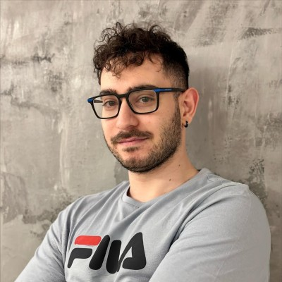

I write software for satellites
Xenofon Papadopoulos (KSEN-oh-fon) · Software engineer · Thessaloniki
I build C++ software at Siemens, and I spent a year on the On-Board Computer of AcubeSAT, a nano-satellite headed for low Earth orbit. Before that I wrote firmware for NAND flash controllers.
AcubeSAT: my first dream, in orbit
AcubeSAT is a nano-satellite that will keep yeast (Saccharomyces cerevisiae) growing in a controlled environment, to study how radiation and microgravity affect living cells in low Earth orbit.
I joined SpaceDot in 2023 as an Embedded Software Engineer in the On-Board Computer (OBC) team, because I wanted to write code that flies. I worked on both the hardware and the software that manage the satellite.
My work covered embedded software for the OBC, open-source OBC software on ARM-based microcontrollers, hardware and software testing, and following ECSS space standards for software reliability.
Visit the mission site- Aug 2023 – Jul 2024Embedded Software Engineer, SpaceDot
- On-Board ComputerThe subsystem that manages the satellite
- ECSS standardsReliability practices for space software, plus open-source code on ARM
Why my background fits space
Spacecraft software is embedded software with higher stakes. Here is what I bring from the work I've done.
Automotive embedded
Ten months in a multinational team of 15, testing and maintaining ECU software in C++ for an automotive OEM, with the documentation discipline that comes with it.
Embedded C++ · C#Flash controller firmware
Two years on second-generation firmware for NAND flash controllers with 14 other developers: planning, implementation, testing, code reviews, documentation and working directly with the customer.
Firmware · C/C++EDA software at Siemens
Maintaining and modernizing electronic design automation tools in C++ and Qt, used by leaders in the electronics industry.
C++ · Qt · Tcl/TkSecure embedded systems
My thesis built a secure data transmission technique on an STM32 with TrustZone and TF-M, using BLE beacons.
Read the thesis →Experience
- MAY 2024 – NOW
Software Engineer, Siemens Digital Industries Software
Part of the team formerly known as Altair. I maintain and modernize electronic design automation (EDA) software in C++ and Qt, helping electronics companies cut design iterations and time to market.
- AUG 2023 – JUL 2024
Embedded Software Engineer, SpaceDot (AcubeSAT)
On-Board Computer team. I designed and implemented hardware and software for satellite management, wrote open-source OBC software for ARM-based microcontrollers, helped test the systems, and followed ECSS space standards.
- JUN 2022 – MAY 2024
Embedded Software Engineer, Kenotom
Second-generation firmware for NAND flash memory controllers, with a new architecture that overcame limits of the old version. With 14 other developers I planned, built and tested firmware, analyzed customer requirements, reviewed code, and maintained documentation.
- AUG 2021 – MAY 2022
Embedded Software Engineer, Kenotom
Tested, maintained and improved non-safety-critical embedded C++ (ECU) and C# (GUI) software for an automotive OEM, in a multinational team of 15. I also wrote the documentation and reports.
- SUMMERS 2019 & 2020
Robotics Teacher, ELAIONES
Taught three classes of 20 kids a day to build and program Lego EV3 robots as a team.
Projects
A few things I've built. More on GitHub.

About me
I hold an integrated master's degree in Computer Science & Engineering from the University of Ioannina, and I'm planning one or two master's degrees aimed at aerospace or automotive software.
I built my first PC at 15 and I still learn best by taking things apart. You'll often find me watching how-to videos I'll probably never follow, just because they're fascinating.
“I want to be part of something great and write software that helps people.”
Let's build something that flies
I'm looking for aerospace software roles, especially flight software and embedded systems. I'm happy to talk about space, programming or games too.